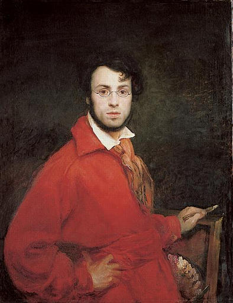

10 de febrero de 1795- 15 de junio de 1858Pintor romántico franco-holandés quien entre los años 1800-1850, tras el auge del romanticismo en Francia con pintores como Xavier Sigalon y Théodore Géricault, decide desarrollar su propio estilo, el cual ha sido llamado "frígidamente clásico" en el cual se plasman temáticas literarias basadas en las obras de autores como Dante, Goethe y Lord Byron, de Fausto, religiosas y retratos. Este pintor tenía fuertes lazos con el rey Luis Felipe I, razón por la cual se convirtió en maestro de los hijos de este último, permitiéndole así vivir una vida de lujo hasta la Revolución Francesa de 1848, año en que tras el nacimiento de la Segunda República y el exilio de Luis Felipe I, Scheffer decide retirarse, produciendo sus obras para sí mismo, las cuales solo pudieron ser exhibidas tras su muerte En 1830, tras la derroca del rey Carlos X y el inicio del reinado del rey Luis Felipe I, Ary scheffer se convirtió en miembro asociado del Real Instituto de los Países Bajos (1846), fue elevado como comandante de la Legión de Honor en 1848, fue capitán de la Garde Nationale y lucho en el ejército de Cavaignac durante el Levantamiento de los Días de Junio en París del 23 al 26 de junio de 1848, para finalmente retirarse de la política tras la crueldad y el odio exhibido por la facción gubernamental. Más tarde se convirtió en ciudadano francés, realizó múltiples viajes, muriendo durante uno de estos últimos a causa de una afección cardíaca. |
 |